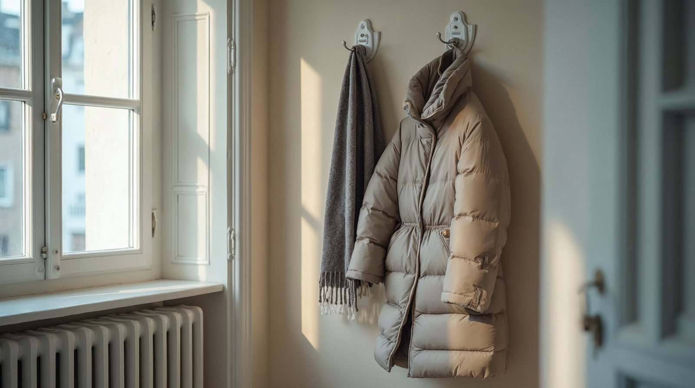

이종호 한의사 감수좋은꿈참사랑한의원 대표원장 (한의사 면허번호 19769)발행 2026-11-25 · 수정 2026-11-26
이 글의 차례
- 왜 이런 불편이 생길 수 있나요
- 추위로 굳은 목과 다른 목 통증은 어떻게 구분해 볼까요
- 먼저 이렇게 여쭙니다
- 일상에서 먼저 해 볼 수 있는 것
- 옷차림과 가방은 어떻게 고를까요
- 출근길 십 분, 이렇게 걸어 보세요
- 사무실에 도착한 뒤 첫 30분은 어떻게 보낼까요
- 왜 손발이 찬 분은 목이 더 쉽게 굳을까요
- 상황별 예시
- 퇴근한 뒤 집에서는 어떻게 풀어 줄까요
- 며칠 지켜보는 동안 무엇을 비교할까요
- 스스로 점검해 보세요
- 얼마나 지켜보고 언제 상담할까요
- 한의원에서 함께 살필 수 있는 경우
- 이렇게 기록해 오시면 상담이 쉬워집니다
- 이런 증상은 먼저 확인이 필요합니다
- 함께 읽으면 좋은 글
한파에 출근한 날 목과 어깨가 굳는다면, 먼저 목을 따뜻하게 감싸고 어깨가 귀 쪽으로 올라가 있지 않은지 살피는 것이 좋습니다. 찬바람이 불면 누구나 고개를 숙이고 어깨를 움츠리게 되는데, 상도역까지 걸어 내려가는 십여 분 동안 이 자세가 이어지면 사무실에 도착했을 때 이미 목이 뻣뻣해져 있기 쉽습니다.
대개 몸을 녹이고 자세를 바꾸면 하루 이틀 사이 덜해지는 흐름을 보이지만, 팔 저림이 함께 있다면 지켜보기보다 진찰로 확인하는 것이 먼저입니다.
예를 들어 아침 일곱 시 반, 영하의 바람 속에서 한 손은 주머니에, 한 손은 휴대폰을 든 채 고개를 숙이고 걷는 모습을 떠올려 보세요. 이때 어깨는 생각보다 훨씬 귀 가까이 올라가 있기 쉽습니다. 노량진역에서 환승 계단을 오르내리며 무거운 가방을 멘 출근길도 비슷합니다.
왜 이런 불편이 생길 수 있나요
추우면 몸은 중심의 온도를 지키려고 손발 쪽으로 가는 혈액 흐름을 줄이고, 근육은 움츠러들며 힘이 들어갑니다. 몸이 차면 같은 뻣뻣함도 더 크게 느껴지기 쉽습니다.
여기에 출근길 자세가 더해집니다. 주머니에 손을 넣고 고개를 숙여 걸으면 목 뒤가 오래 당기고, 두꺼운 외투와 무거운 가방은 어깨를 아래로 누릅니다. 귀가 어깨보다 앞으로 나온 자세에서는 머리 무게를 버티느라 목 뒤와 어깨 위 근육이 쉬지 못합니다.
실내외 온도 차가 커서 드나들 때마다 몸이 다시 움츠러드는 것도 한몫합니다. 해가 짧고 추운 날이 이어지면 바깥에서 몸을 움직이는 시간까지 줄어듭니다. 한의학에서는 찬 기운에 목과 어깨가 굳는 것을 몸 전체가 찬 정도, 잠과 피로와 함께 묶어서 살핍니다.
추위로 굳은 목과 다른 목 통증은 어떻게 구분해 볼까요
추운 날 목이 뻣뻣하다고 해도 그 모양은 조금씩 다릅니다. 진료 때 어떤 쪽에 가까운지 말씀해 주시면 살피는 순서를 정하는 데 도움이 됩니다.
- 목 뒤와 어깨 위쪽이 넓게 묵직하고, 몸을 녹이거나 움직이면 조금씩 풀린다면 추위와 자세로 근육이 오래 버틴 경우가 많습니다.
- 자고 일어났더니 한쪽으로 고개가 돌아가지 않고, 돌리려 하면 날개뼈 안쪽까지 찌르듯 아프다면 근육이 갑자기 굳은 상태를 먼저 떠올립니다.
- 목에서 어깨를 지나 팔이나 손가락까지 저리거나 찌릿하다면 목에서 내려오는 신경 쪽 부담일 수 있어 따로 살핍니다.
- 뒷목이 뻣뻣하면서 이마나 관자놀이까지 조이는 두통이 함께 온다면 목과 머리 주변 근육의 긴장을 함께 봅니다.
어느 쪽인지 애매해도 괜찮습니다. 언제, 어떤 동작에서, 어디까지 불편한지 세 가지만 기억해 오셔도 충분합니다. 그날 아침 기온이 유난히 낮았는지, 잠을 설친 날이었는지도 함께 떠올려 주시면 더 좋습니다.
먼저 이렇게 여쭙니다
- 목을 돌릴 때와 숙일 때 중 언제 더 불편한가요?
- 아침 출근 직후와 저녁 중 언제 더 뻣뻣한가요?
- 두통이나 눈의 피로, 팔 저림이 함께 있나요?
- 가방은 어느 쪽 어깨에 어떻게 메나요?
- 추위를 많이 타고 손발이 찬 편인가요?
- 잘 때 베개 높이와 방 온도는 어떤가요?
일상에서 먼저 해 볼 수 있는 것
- 목도리나 넥워머로 목 뒤를 덮고 나서기
- 장갑을 끼고 손을 주머니에서 꺼내 팔을 자연스럽게 흔들며 걷기
- 걸으면서 숨을 내쉴 때 어깨를 한 번씩 툭 떨어뜨리기
- 가방은 양쪽 어깨에 메거나 자주 바꿔 메기
- 사무실에 도착하면 겉옷을 벗고 어깨를 크게 돌려 풀기
- 모니터 위쪽을 눈높이에 맞추고 50분에 한 번 가슴을 펴기
옷차림과 가방은 어떻게 고를까요
목과 어깨를 지키는 데에는 무엇을 입고 무엇을 메느냐도 큰 몫을 합니다. 목이 드러나는 외투를 입으면 찬바람이 닿을 때마다 몸이 움찔하며 어깨를 올리게 되니, 목도리나 목까지 올라오는 옷으로 목 뒤를 먼저 덮어 주세요.
아주 두껍고 무거운 패딩은 따뜻하지만 어깨를 아래로 누르는 무게가 하루 종일 이어집니다. 얇은 옷을 여러 겹 겹쳐 입고 겉옷은 가벼운 것으로 고르면 어깨 부담을 덜 수 있습니다. 가방은 한쪽 어깨에 걸치는 것보다 양쪽 어깨에 메는 배낭이, 손에 드는 것보다 몸에 가까이 붙는 것이 목과 어깨에 덜 부담이 됩니다.
가방 속 노트북이나 두꺼운 책은 꼭 필요한 날만 챙기고, 보온병이나 텀블러처럼 무게가 나가는 물건은 사무실에 하나 두고 쓰는 것도 방법입니다.
출근길 십 분, 이렇게 걸어 보세요
출근길 자세는 하루 이틀 신경 쓴다고 바로 바뀌지 않지만, 몇 가지를 습관으로 만들면 목과 어깨에 쌓이는 부담이 달라집니다. 문을 나서기 전에 거울 앞에서 어깨를 한 번 올렸다가 툭 떨어뜨리고, 그 높이를 기억한 채 걸어 보세요.
걸을 때는 시선을 발밑이 아니라 열 걸음쯤 앞에 둡니다. 고개가 앞으로 빠지지 않고, 턱을 살짝 당긴 채 귀가 어깨 위에 오도록 하면 목 뒤가 덜 당깁니다. 휴대폰은 걷는 동안 가방에 넣고, 꼭 확인해야 한다면 잠깐 멈춰 서서 봅니다.
언덕길이나 얼어붙은 길을 내려갈 때는 보폭을 작게 하고 무릎을 살짝 굽혀 걸어 보세요. 보폭을 줄이는 것은 복지관 강연에서 어르신들께 넘어지지 않는 걸음으로 권해 드린 방법이기도 합니다. 미끄러질까 겁나 어깨에 잔뜩 힘이 들어가는 것도 목이 굳는 원인이 됩니다.
사무실에 도착한 뒤 첫 30분은 어떻게 보낼까요
추운 길을 걸어온 몸은 실내에 들어와서도 한동안 움츠린 채 머뭅니다. 도착하자마자 의자에 앉아 메일을 열기보다, 겉옷을 벗고 따뜻한 물을 한 잔 마시며 몸이 실내 온도에 익숙해질 시간을 몇 분 주세요.
그동안 어깨를 앞뒤로 크게 돌리고, 양손을 등 뒤로 깍지 껴 가슴을 펴 봅니다. 목은 세게 꺾지 말고 아프지 않은 범위에서 천천히 좌우로 기울였다 돌아옵니다. 이 몇 분이 하루 내내 목이 굳어 있는 시간을 줄여 줄 수 있습니다.
자리에 앉은 뒤에도 어깨를 억지로 뒤로 젖힌 채 버티면 금방 지칩니다. 힘주어 버티기보다 짧게 자주 가슴을 펴 주는 편이 오래 이어 가기 쉽습니다.
사무실 자리가 출입문 가까이에 있어 찬바람이 자주 들어온다면 얇은 가디건이나 머플러를 의자에 걸어 두고, 목 뒤가 서늘할 때마다 덮어 주세요. 점심시간에는 잠깐이라도 밖에 나가 햇볕을 쬐며 걸으면 오후의 뻣뻣함을 덜 수 있습니다.
왜 손발이 찬 분은 목이 더 쉽게 굳을까요
추위를 많이 타는 분은 같은 기온에서도 몸을 웅크리는 시간이 더 길고, 실내에 들어와서도 몸이 풀리기까지 오래 걸립니다. 손발이 차면 무의식적으로 팔을 몸에 붙이고 어깨를 올린 채 지내게 되어 목과 어깨 근육이 쉴 틈이 줄어듭니다.
그래서 저는 목과 어깨가 자주 굳는 분께 몸 전체를 따뜻하게 지키는 일을 함께 권합니다. 잘 먹고, 잘 싸고, 잘 자고, 마음 편하고, 몸 따뜻하게. 제가 몸이 회복하는 바탕으로 보는 다섯 가지 가운데 하나가 몸의 온기입니다.
목만 감싸기보다 허리와 아랫배, 발목까지 덮어 체온이 빠져나가지 않게 하고, 찬 음료보다 미지근한 물을 자주 드세요. 잠과 식사가 불규칙해 몸이 지쳐 있으면 추위를 더 크게 느끼기 쉬워, 이 부분도 진료 때 함께 여쭙습니다.

상황별 예시
예를 들어 상도동 언덕길을 걸어 내려가 지하철로 출근하는 직장인이라면, 걷는 동안 움츠린 어깨가 붐비는 지하철에서 손잡이를 잡은 채 그대로 굳고 도착하자마자 모니터 앞에 앉게 됩니다. 출근길 어느 구간에서 어깨가 가장 많이 올라가는지 하루만 살펴보면 그 구간부터 바꿔 볼 수 있습니다.
예를 들어 노량진 학원가로 아침 일찍 나서는 수험생이 무거운 책가방을 메고 찬바람을 맞으며 걷고 하루 종일 고개를 숙여 공부한다면, 목 뒤 뻐근함과 두통이 함께 올 수 있습니다. 가방 무게를 줄이고 50분 공부에 한 번 일어나 목을 천천히 돌려 봅니다.
예를 들어 이른 아침 산책이나 장보기를 하시는 어르신이 한파 속에서 몸을 잔뜩 웅크리고 걸으면, 목과 어깨뿐 아니라 걸음이 조심스러워지며 허리까지 뻣뻣해질 수 있습니다. 해가 오른 뒤 나서고, 목도리와 장갑으로 몸을 덮어 움츠림을 줄여 봅니다.
퇴근한 뒤 집에서는 어떻게 풀어 줄까요
퇴근길에도 찬바람을 맞으며 다시 어깨를 움츠리게 됩니다. 집에 들어오면 바로 소파에 기대 휴대폰을 보기보다, 먼저 따뜻한 물로 샤워하며 목 뒤와 어깨에 물을 충분히 맞혀 몸을 데워 주세요. 씻은 뒤에는 머리와 몸을 바로 말려 다시 식지 않게 합니다.
샤워 뒤 몸이 따뜻할 때 가볍게 움직이면 굳은 근육이 덜 저항합니다. 벽에 등을 대고 서서 뒤통수와 어깨, 엉덩이가 벽에 닿게 한 채 깊게 숨을 몇 번 쉬어 보세요. 평소 고개가 얼마나 앞으로 나와 있었는지 스스로 느끼기 쉽습니다.
찜질을 하신다면 한 번에 15~20분 정도로 하고 피부 상태를 확인하세요. 따뜻하게 한 뒤 시원하게 풀리는 느낌이면 이어 가고, 쥐가 나거나 욱신거림이 늘면 멈추는 편이 좋습니다. 찜질기를 켠 채 잠들지 않도록 해 주세요.
저녁에 오래 휴대폰을 내려다보면 출근길에 굳은 목이 다시 숙여진 채로 밤을 맞게 됩니다. 휴대폰은 눈높이 가까이 들고 보거나 거치대에 세워 두고, 잠들기 한 시간 전에는 내려놓으세요. 방이 너무 서늘하면 자는 동안에도 몸이 움츠러들 수 있어, 목까지 덮는 이불이나 얇은 목수건을 챙기시길 권합니다.
며칠 지켜보는 동안 무엇을 비교할까요
목과 어깨는 날씨와 그날의 일에 따라 느낌이 크게 달라집니다. 그래서 기온이 가장 낮았던 날과 조금 풀린 날, 오래 걸은 날과 짧게 걸은 날을 나란히 적어 두면 무엇이 목을 굳게 하는지 보이기 시작합니다.
아침에 일어났을 때 고개를 좌우로 돌려 보고, 어느 쪽이 더 걸리는지와 아픈 정도를 숫자로 적어 보세요. 출근길 습관을 바꾼 뒤 이 숫자가 조금씩 내려간다면 지금 방법이 맞는 쪽이라고 볼 수 있습니다. 숫자가 그대로라면 진료 때 그 기록을 보며 다른 원인이 없는지 함께 찾아봅니다.
스스로 점검해 보세요
아래 가운데 해당하는 것을 표시해 보세요. 진단이 아니라 진료 때 이야기를 시작하는 출발점입니다.
- 걸을 때 유리창에 비친 어깨가 귀 쪽으로 올라가 있다
- 아침에 고개를 한쪽으로 돌리기가 유독 어렵다
- 한쪽 어깨에만 가방을 메는 날이 많다
- 추운 날이면 두통이나 눈의 피로가 함께 온다
- 손발이 차고 실내에 들어와도 한참 동안 몸이 풀리지 않는다
- 따뜻하게 씻고 나면 뻣뻣함이 한결 덜하다
얼마나 지켜보고 언제 상담할까요
목을 따뜻하게 하고 출근길 자세를 바꾸면서 하루 이틀 사이 덜해진다면 생활 관리를 이어 가며 지켜보셔도 됩니다.
일주일 넘게 아침마다 목이 잘 돌아가지 않거나 추운 날마다 두통이 따라온다면, 진료에서 목 주변의 긴장과 자세를 함께 확인해 보시길 권합니다. 두 주가 지나도 줄지 않거나 누워 쉬어도 밤새 아프다면 더 미루지 말고 진찰을 받아 보세요.

한의원에서 함께 살필 수 있는 경우
- 추워질 때마다 목과 어깨가 굳고 두통이 따라오는 경우 목 주변의 긴장과 자세를 함께 살핍니다.
- 한쪽 어깨만 유독 뭉치는 경우 가방 메는 습관과 앉는 자세를 함께 살핍니다.
- 팔이나 손가락이 저린 경우 목에서 내려오는 불편인지 함께 확인합니다.
좋은꿈참사랑한의원에서는 첫 방문 때 맥부터 짚으며 출근길 동선과 걷는 시간, 가방 무게, 하루 중 가장 뻣뻣한 시간대를 여쭙습니다. 그다음 목을 돌리고 숙이고 젖히는 움직임과 어깨 높이, 팔의 힘과 저림을 확인하고, 필요하다고 판단될 때 아픈 곳과 주변을 눌러 보거나 초음파로 살핍니다.
상태에 맞춰 가장 불편한 곳은 원장이 직접 침·약침·추나 등으로 살피고, 그 밖의 뭉친 곳은 직원이 온열·자기장 같은 물리치료로 이어서 살핍니다. 치료 중 자세나 온도, 자극이 불편하면 바로 말씀해 주세요.
귀가 전에는 출근길과 사무실에서 해 볼 자세, 집에서 지켜볼 점과 다음에 확인할 일을 알려 드립니다.
이렇게 기록해 오시면 상담이 쉬워집니다
- 가장 뻣뻣한 시간대와 아픈 정도(0~10)
- 불편한 동작(고개 돌리기, 숙이기, 팔 들기)
- 출근 시간과 가방 무게, 메는 방법
- 출근길에 걷는 시간과 오르내리는 계단·언덕
- 추위를 느끼는 정도와 손발이 찬지
- 두통이나 팔 저림이 있었던 날
찬바람 속에서 하루를 여는 것만으로도 몸은 꽤 애를 씁니다. 다음에 오시면 그날 아침 어깨가 얼마나 올라가 있었는지, 어느 쪽으로 고개가 더 걸렸는지부터 여쭙겠습니다.
이런 증상은 먼저 확인이 필요합니다
- 팔에 힘이 빠지거나 팔 감각이 둔해지는 경우
- 가슴 통증이나 숨참이 어깨 통증과 함께 오는 경우
이런 신호가 있으면 한의원보다 가까운 병원이나 응급실을 먼저 찾으세요.
함께 읽으면 좋은 글
- 찬바람을 맞은 아침에 이마와 뒷목이 조이듯 아픈 두통은 어떻게 살피나요?
- 두꺼운 패딩에 무거운 가방까지 메는 겨울에 어깨가 처지고 아프면 어떻게 살피나요?
- 상도역에서 지하철로 출퇴근하며 서서 휴대폰을 보다 보면 목과 어깨가 굳을 때는 어떻게 살피나요?

여쭙는 것
- 목을 돌릴 때와 숙일 때 중 언제 더 불편한가요?
- 아침 출근 직후와 저녁 중 언제 더 뻣뻣한가요?
- 두통이나 눈의 피로, 팔 저림이 함께 있나요?
생활에서 해 볼 것
- 목도리나 넥워머로 목 뒤를 덮고 나서기
- 장갑을 끼고 손을 주머니에서 꺼내 팔을 자연스럽게 흔들며 걷기
- 걸으면서 숨을 내쉴 때 어깨를 한 번씩 툭 떨어뜨리기
한의원에서 함께 살필 것
- 추워질 때마다 목과 어깨가 굳고 두통이 따라오는 경우 목 주변의 긴장과 자세를 함께…
- 한쪽 어깨만 유독 뭉치는 경우 가방 메는 습관과 앉는 자세를 함께 살핍니다.
- 팔이나 손가락이 저린 경우 목에서 내려오는 불편인지 함께 확인합니다.
먼저 확인이 필요한 신호
- 팔에 힘이 빠지거나 팔 감각이 둔해지는 경우
- 가슴 통증이나 숨참이 어깨 통증과 함께 오는 경우
한눈에 보는 표
| 구분 | 핵심 |
|---|---|
| 여쭙는 것 | 목을 돌릴 때와 숙일 때 중 언제 더 불편한가요? 아침 출근 직후와 저녁 중 언제 더 뻣뻣한가요? |
| 생활에서 해 볼 것 | 목도리나 넥워머로 목 뒤를 덮고 나서기 장갑을 끼고 손을 주머니에서 꺼내 팔을 자연스럽게 흔들며 걷기 |
| 한의원에서 함께 살필 것 | 추워질 때마다 목과 어깨가 굳고 두통이 따라오는 경우 목 주변의 긴장과 자세를 함께 살핍니다. 한쪽 어깨만 유독 뭉치는 경우 가방 메는 습관과 앉는 자세를 함께 살핍니다. |
| 먼저 확인이 필요한 신호 | 팔에 힘이 빠지거나 팔 감각이 둔해지는 경우 가슴 통증이나 숨참이 어깨 통증과 함께 오는 경우 |
자주 묻는 질문
목을 우두둑 소리 나게 돌려도 되나요?
세게 꺾는 동작은 권하지 않습니다. 소리를 내기보다 아프지 않은 범위에서 천천히 움직이는 편이 목에 부담이 적습니다.
핫팩을 목에 붙이고 다녀도 되나요?
옷 위에 붙이고 한자리에 오래 두지 않도록 하세요. 뜨겁지 않게 느껴져도 저온 화상이 생길 수 있습니다.
추위를 타는 것도 진료 때 말해야 하나요?
네. 몸이 차가운 정도는 목과 어깨의 뻣뻣함을 살필 때 함께 참고하는 정보입니다. 손발이나 아랫배가 찬지도 알려 주세요.
퇴근길에 들를 수 있나요?
좋은꿈참사랑한의원은 평일 09:30~20:00(점심 13:00~14:00), 토·일·공휴일 09:30~15:00(점심시간 없음)에 진료합니다. 상도역 3번 출구에서 걸어오실 수 있고, 원장별 진료 일정은 방문 전 전화(02-815-7510)로 확인해 주세요.
좋은꿈참사랑한의원은 재진 때 지난번 이야기부터 이어서 여쭙니다. 진료시간과 예약은 오시는 길에서 확인하세요.
어디서 상담받을 수 있나요?
좋은꿈참사랑한의원은 서울 동작구 만양로2길 2 신성빌딩 3층·5층(서울 동작구 상도동, 7호선 상도역 3번 출구 근처)에 있습니다. 한의사 3명(이종호 대표원장, 조영기 수석진료원장, 정원영 진료원장)이 진료합니다. 진료시간은 평일 09:30~20:00(점심 13:00~14:00), 토·일·공휴일 09:30~15:00이며, 방문 전 전화로 확인을 권합니다. 예약은 네이버 예약, 카카오톡 상담, 전화 02-815-7510로 받습니다.
이 글은 일반적인 건강 정보이며 개인의 진단이나 치료를 대신하지 않습니다. 증상이 있거나 복용 중인 약이 있다면 진료를 통해 확인하세요. 치료 효과는 개인마다 다를 수 있습니다.
작성 기준: 일반적으로 알려져 있는 건강 정보를 참고해 정리했습니다(대표원장 감수). 증상 기록은 1~2주 동안 하루 1회, 비슷한 시간에 적어 오시면 지난 상태와 비교하기 쉽습니다.